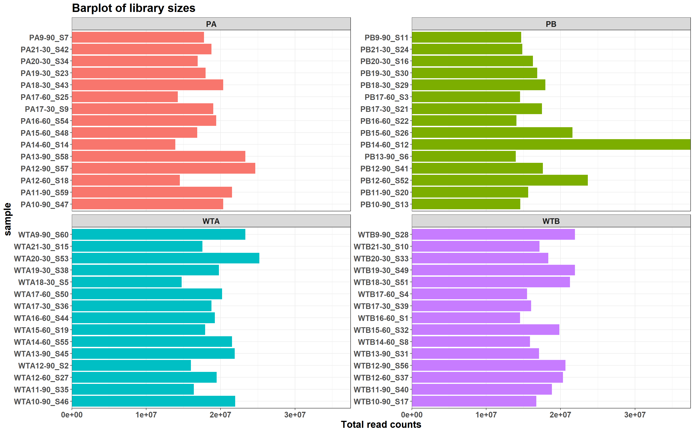

RNA-Seq significance analysis
220221_A01275_0052_AHT7L3DRXY
Arnaud Muller
22 avril 2022
Last updated: 2022-04-22
Checks: 7 0
Knit directory: myproject2/
This reproducible R Markdown analysis was created with workflowr (version 1.7.0). The Checks tab describes the reproducibility checks that were applied when the results were created. The Past versions tab lists the development history.
Great! Since the R Markdown file has been committed to the Git repository, you know the exact version of the code that produced these results.
Great job! The global environment was empty. Objects defined in the global environment can affect the analysis in your R Markdown file in unknown ways. For reproduciblity it’s best to always run the code in an empty environment.
The command set.seed(20220421) was run prior to running the code in the R Markdown file. Setting a seed ensures that any results that rely on randomness, e.g. subsampling or permutations, are reproducible.
Great job! Recording the operating system, R version, and package versions is critical for reproducibility.
Nice! There were no cached chunks for this analysis, so you can be confident that you successfully produced the results during this run.
Great job! Using relative paths to the files within your workflowr project makes it easier to run your code on other machines.
Great! You are using Git for version control. Tracking code development and connecting the code version to the results is critical for reproducibility.
The results in this page were generated with repository version 4dd1e47. See the Past versions tab to see a history of the changes made to the R Markdown and HTML files.
Note that you need to be careful to ensure that all relevant files for the analysis have been committed to Git prior to generating the results (you can use wflow_publish or wflow_git_commit). workflowr only checks the R Markdown file, but you know if there are other scripts or data files that it depends on. Below is the status of the Git repository when the results were generated:
Ignored files:
Ignored: .Rhistory
Untracked files:
Untracked: all.tsv
Untracked: sampleannotation.tsv
Note that any generated files, e.g. HTML, png, CSS, etc., are not included in this status report because it is ok for generated content to have uncommitted changes.
There are no past versions. Publish this analysis with wflow_publish() to start tracking its development.
Warning: The above code chunk cached its results, but it won’t be re-run if previous chunks it depends on are updated. If you need to use caching, it is highly recommended to also set knitr::opts_chunk$set(autodep = TRUE) at the top of the file (in a chunk that is not cached). Alternatively, you can customize the option dependson for each individual chunk that is cached. Using either autodep or dependson will remove this warning. See the knitr cache options for more details.
File import
Initial data import stands in the following files:
- all.tsv: raw counts
- sampleannotation.tsv: metadata describing each sample, as seen below.
Warning: The above code chunk cached its results, but it won’t be re-run if previous chunks it depends on are updated. If you need to use caching, it is highly recommended to also set knitr::opts_chunk$set(autodep = TRUE) at the top of the file (in a chunk that is not cached). Alternatively, you can customize the option dependson for each individual chunk that is cached. Using either autodep or dependson will remove this warning. See the knitr cache options for more details.
Warning: The above code chunk cached its results, but it won’t be re-run if previous chunks it depends on are updated. If you need to use caching, it is highly recommended to also set knitr::opts_chunk$set(autodep = TRUE) at the top of the file (in a chunk that is not cached). Alternatively, you can customize the option dependson for each individual chunk that is cached. Using either autodep or dependson will remove this warning. See the knitr cache options for more details.
Distributions

Warning: The above code chunk cached its results, but it won’t be re-run if previous chunks it depends on are updated. If you need to use caching, it is highly recommended to also set knitr::opts_chunk$set(autodep = TRUE) at the top of the file (in a chunk that is not cached). Alternatively, you can customize the option dependson for each individual chunk that is cached. Using either autodep or dependson will remove this warning. See the knitr cache options for more details.
Clustering
Warning: The above code chunk cached its results, but it won’t be re-run if previous chunks it depends on are updated. If you need to use caching, it is highly recommended to also set knitr::opts_chunk$set(autodep = TRUE) at the top of the file (in a chunk that is not cached). Alternatively, you can customize the option dependson for each individual chunk that is cached. Using either autodep or dependson will remove this warning. See the knitr cache options for more details.
Warning: The above code chunk cached its results, but it won’t be re-run if previous chunks it depends on are updated. If you need to use caching, it is highly recommended to also set knitr::opts_chunk$set(autodep = TRUE) at the top of the file (in a chunk that is not cached). Alternatively, you can customize the option dependson for each individual chunk that is cached. Using either autodep or dependson will remove this warning. See the knitr cache options for more details.
Results
For each comparison, you can find the box plot of top20 significant genes and a volcano plot.
A table with fold-change and adjusted pValue is as well available for each comparison. The comparisons of interest are the folowing:
# A tibble: 12 x 2
group1 group2
<chr> <chr>
1 PA_30 PB_30
2 PA_60 PB_60
3 PA_90 PB_90
4 PA_30 WTA_30
5 PA_60 WTA_60
6 PA_90 WTA_90
7 PB_30 WTB_30
8 PB_60 WTB_60
9 PB_90 WTB_90
10 WTA_30 WTB_30
11 WTA_60 WTB_60
12 WTA_90 WTB_90
Warning: The above code chunk cached its results, but it won’t be re-run if previous chunks it depends on are updated. If you need to use caching, it is highly recommended to also set knitr::opts_chunk$set(autodep = TRUE) at the top of the file (in a chunk that is not cached). Alternatively, you can customize the option dependson for each individual chunk that is cached. Using either autodep or dependson will remove this warning. See the knitr cache options for more details.
[[1]]
[[2]]
[[3]]
[[4]]
[[5]]
[[6]]
[[7]]
[[8]]
[[9]]
[[10]]
[[11]]
[[12]]
Warning: The above code chunk cached its results, but it won’t be re-run if previous chunks it depends on are updated. If you need to use caching, it is highly recommended to also set knitr::opts_chunk$set(autodep = TRUE) at the top of the file (in a chunk that is not cached). Alternatively, you can customize the option dependson for each individual chunk that is cached. Using either autodep or dependson will remove this warning. See the knitr cache options for more details.
The number od significant genes (adjPval < 0.01) per comparison is the following:
# A tibble: 12 x 2
group1_group2 n
<chr> <int>
1 PA_30_PB_30 2248
2 PA_30_WTA_30 1182
3 PA_60_PB_60 6518
4 PA_60_WTA_60 2160
5 PA_90_PB_90 5503
6 PA_90_WTA_90 2632
7 PB_30_WTB_30 731
8 PB_60_WTB_60 5275
9 PB_90_WTB_90 5025
10 WTA_30_WTB_30 127
11 WTA_60_WTB_60 10
12 WTA_90_WTB_90 179
Warning: The above code chunk cached its results, but it won’t be re-run if previous chunks it depends on are updated. If you need to use caching, it is highly recommended to also set knitr::opts_chunk$set(autodep = TRUE) at the top of the file (in a chunk that is not cached). Alternatively, you can customize the option dependson for each individual chunk that is cached. Using either autodep or dependson will remove this warning. See the knitr cache options for more details.
Warning: The above code chunk cached its results, but it won’t be re-run if previous chunks it depends on are updated. If you need to use caching, it is highly recommended to also set knitr::opts_chunk$set(autodep = TRUE) at the top of the file (in a chunk that is not cached). Alternatively, you can customize the option dependson for each individual chunk that is cached. Using either autodep or dependson will remove this warning. See the knitr cache options for more details.
Session info
sessionInfo()R version 4.1.0 (2021-05-18)
Platform: x86_64-w64-mingw32/x64 (64-bit)
Running under: Windows 10 x64 (build 18363)
Matrix products: default
locale:
[1] LC_COLLATE=French_Luxembourg.1252 LC_CTYPE=French_Luxembourg.1252
[3] LC_MONETARY=French_Luxembourg.1252 LC_NUMERIC=C
[5] LC_TIME=French_Luxembourg.1252
attached base packages:
[1] parallel stats4 stats graphics grDevices utils datasets
[8] methods base
other attached packages:
[1] UpSetR_1.4.0 cowplot_1.1.1
[3] ggforce_0.3.3 DT_0.22
[5] biomaRt_2.48.3 ggrepel_0.9.1
[7] viridis_0.6.2 viridisLite_0.4.0
[9] reshape2_1.4.4 FactoMineR_2.4
[11] RColorBrewer_1.1-3 pheatmap_1.0.12
[13] DESeq2_1.32.0 SummarizedExperiment_1.22.0
[15] Biobase_2.52.0 MatrixGenerics_1.4.3
[17] matrixStats_0.62.0 GenomicRanges_1.44.0
[19] GenomeInfoDb_1.28.4 IRanges_2.26.0
[21] S4Vectors_0.30.2 BiocGenerics_0.38.0
[23] forcats_0.5.1 stringr_1.4.0
[25] dplyr_1.0.8 purrr_0.3.4
[27] readr_2.1.2 tidyr_1.2.0
[29] tibble_3.1.6 ggplot2_3.3.5
[31] tidyverse_1.3.1 workflowr_1.7.0
loaded via a namespace (and not attached):
[1] readxl_1.4.0 backports_1.4.1 BiocFileCache_2.0.0
[4] plyr_1.8.7 splines_4.1.0 crosstalk_1.2.0
[7] BiocParallel_1.26.2 digest_0.6.29 htmltools_0.5.2
[10] fansi_1.0.3 magrittr_2.0.3 memoise_2.0.1
[13] cluster_2.1.3 tzdb_0.3.0 Biostrings_2.60.2
[16] annotate_1.70.0 modelr_0.1.8 vroom_1.5.7
[19] prettyunits_1.1.1 colorspace_2.0-3 blob_1.2.3
[22] rvest_1.0.2 rappdirs_0.3.3 haven_2.5.0
[25] xfun_0.30 callr_3.7.0 crayon_1.5.1
[28] RCurl_1.98-1.6 jsonlite_1.8.0 genefilter_1.74.1
[31] survival_3.3-1 glue_1.6.2 polyclip_1.10-0
[34] gtable_0.3.0 zlibbioc_1.38.0 XVector_0.32.0
[37] DelayedArray_0.18.0 scales_1.2.0 DBI_1.1.2
[40] Rcpp_1.0.8.3 xtable_1.8-4 progress_1.2.2
[43] flashClust_1.01-2 bit_4.0.4 htmlwidgets_1.5.4
[46] httr_1.4.2 ellipsis_0.3.2 farver_2.1.0
[49] pkgconfig_2.0.3 XML_3.99-0.9 sass_0.4.1
[52] dbplyr_2.1.1 locfit_1.5-9.5 utf8_1.2.2
[55] labeling_0.4.2 tidyselect_1.1.2 rlang_1.0.2
[58] later_1.3.0 AnnotationDbi_1.54.1 munsell_0.5.0
[61] cellranger_1.1.0 tools_4.1.0 cachem_1.0.6
[64] cli_3.2.0 generics_0.1.2 RSQLite_2.2.12
[67] broom_0.8.0 evaluate_0.15 fastmap_1.1.0
[70] yaml_2.3.5 processx_3.5.3 knitr_1.38
[73] bit64_4.0.5 fs_1.5.2 KEGGREST_1.32.0
[76] whisker_0.4 leaps_3.1 xml2_1.3.3
[79] compiler_4.1.0 rstudioapi_0.13 filelock_1.0.2
[82] curl_4.3.2 png_0.1-7 reprex_2.0.1
[85] tweenr_1.0.2 geneplotter_1.70.0 bslib_0.3.1
[88] stringi_1.7.6 highr_0.9 ps_1.6.0
[91] lattice_0.20-45 Matrix_1.4-1 vctrs_0.4.1
[94] pillar_1.7.0 lifecycle_1.0.1 jquerylib_0.1.4
[97] bitops_1.0-7 httpuv_1.6.5 R6_2.5.1
[100] promises_1.2.0.1 gridExtra_2.3 codetools_0.2-18
[103] MASS_7.3-56 assertthat_0.2.1 rprojroot_2.0.3
[106] withr_2.5.0 GenomeInfoDbData_1.2.6 hms_1.1.1
[109] grid_4.1.0 rmarkdown_2.13 git2r_0.30.1
[112] getPass_0.2-2 scatterplot3d_0.3-41 lubridate_1.8.0
Warning: The above code chunk cached its results, but it won’t be re-run if previous chunks it depends on are updated. If you need to use caching, it is highly recommended to also set knitr::opts_chunk$set(autodep = TRUE) at the top of the file (in a chunk that is not cached). Alternatively, you can customize the option dependson for each individual chunk that is cached. Using either autodep or dependson will remove this warning. See the knitr cache options for more details.
R version 4.1.0 (2021-05-18)
Platform: x86_64-w64-mingw32/x64 (64-bit)
Running under: Windows 10 x64 (build 18363)
Matrix products: default
locale:
[1] LC_COLLATE=French_Luxembourg.1252 LC_CTYPE=French_Luxembourg.1252
[3] LC_MONETARY=French_Luxembourg.1252 LC_NUMERIC=C
[5] LC_TIME=French_Luxembourg.1252
attached base packages:
[1] parallel stats4 stats graphics grDevices utils datasets
[8] methods base
other attached packages:
[1] UpSetR_1.4.0 cowplot_1.1.1
[3] ggforce_0.3.3 DT_0.22
[5] biomaRt_2.48.3 ggrepel_0.9.1
[7] viridis_0.6.2 viridisLite_0.4.0
[9] reshape2_1.4.4 FactoMineR_2.4
[11] RColorBrewer_1.1-3 pheatmap_1.0.12
[13] DESeq2_1.32.0 SummarizedExperiment_1.22.0
[15] Biobase_2.52.0 MatrixGenerics_1.4.3
[17] matrixStats_0.62.0 GenomicRanges_1.44.0
[19] GenomeInfoDb_1.28.4 IRanges_2.26.0
[21] S4Vectors_0.30.2 BiocGenerics_0.38.0
[23] forcats_0.5.1 stringr_1.4.0
[25] dplyr_1.0.8 purrr_0.3.4
[27] readr_2.1.2 tidyr_1.2.0
[29] tibble_3.1.6 ggplot2_3.3.5
[31] tidyverse_1.3.1 workflowr_1.7.0
loaded via a namespace (and not attached):
[1] readxl_1.4.0 backports_1.4.1 BiocFileCache_2.0.0
[4] plyr_1.8.7 splines_4.1.0 crosstalk_1.2.0
[7] BiocParallel_1.26.2 digest_0.6.29 htmltools_0.5.2
[10] fansi_1.0.3 magrittr_2.0.3 memoise_2.0.1
[13] cluster_2.1.3 tzdb_0.3.0 Biostrings_2.60.2
[16] annotate_1.70.0 modelr_0.1.8 vroom_1.5.7
[19] prettyunits_1.1.1 colorspace_2.0-3 blob_1.2.3
[22] rvest_1.0.2 rappdirs_0.3.3 haven_2.5.0
[25] xfun_0.30 callr_3.7.0 crayon_1.5.1
[28] RCurl_1.98-1.6 jsonlite_1.8.0 genefilter_1.74.1
[31] survival_3.3-1 glue_1.6.2 polyclip_1.10-0
[34] gtable_0.3.0 zlibbioc_1.38.0 XVector_0.32.0
[37] DelayedArray_0.18.0 scales_1.2.0 DBI_1.1.2
[40] Rcpp_1.0.8.3 xtable_1.8-4 progress_1.2.2
[43] flashClust_1.01-2 bit_4.0.4 htmlwidgets_1.5.4
[46] httr_1.4.2 ellipsis_0.3.2 farver_2.1.0
[49] pkgconfig_2.0.3 XML_3.99-0.9 sass_0.4.1
[52] dbplyr_2.1.1 locfit_1.5-9.5 utf8_1.2.2
[55] labeling_0.4.2 tidyselect_1.1.2 rlang_1.0.2
[58] later_1.3.0 AnnotationDbi_1.54.1 munsell_0.5.0
[61] cellranger_1.1.0 tools_4.1.0 cachem_1.0.6
[64] cli_3.2.0 generics_0.1.2 RSQLite_2.2.12
[67] broom_0.8.0 evaluate_0.15 fastmap_1.1.0
[70] yaml_2.3.5 processx_3.5.3 knitr_1.38
[73] bit64_4.0.5 fs_1.5.2 KEGGREST_1.32.0
[76] whisker_0.4 leaps_3.1 xml2_1.3.3
[79] compiler_4.1.0 rstudioapi_0.13 filelock_1.0.2
[82] curl_4.3.2 png_0.1-7 reprex_2.0.1
[85] tweenr_1.0.2 geneplotter_1.70.0 bslib_0.3.1
[88] stringi_1.7.6 highr_0.9 ps_1.6.0
[91] lattice_0.20-45 Matrix_1.4-1 vctrs_0.4.1
[94] pillar_1.7.0 lifecycle_1.0.1 jquerylib_0.1.4
[97] bitops_1.0-7 httpuv_1.6.5 R6_2.5.1
[100] promises_1.2.0.1 gridExtra_2.3 codetools_0.2-18
[103] MASS_7.3-56 assertthat_0.2.1 rprojroot_2.0.3
[106] withr_2.5.0 GenomeInfoDbData_1.2.6 hms_1.1.1
[109] grid_4.1.0 rmarkdown_2.13 git2r_0.30.1
[112] getPass_0.2-2 scatterplot3d_0.3-41 lubridate_1.8.0
Warning: The above code chunk cached its results, but it won’t be re-run if previous chunks it depends on are updated. If you need to use caching, it is highly recommended to also set knitr::opts_chunk$set(autodep = TRUE) at the top of the file (in a chunk that is not cached). Alternatively, you can customize the option dependson for each individual chunk that is cached. Using either autodep or dependson will remove this warning. See the knitr cache options for more details.